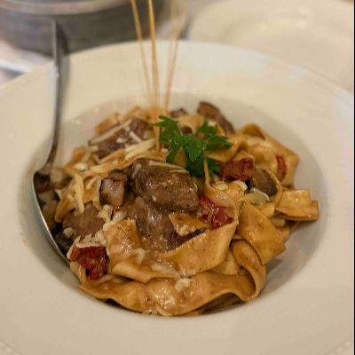

One of the most memorable trips I have ever taken was 2 years ago when my wife and I went to Santorini, Greece. We spent 4 days and 3 nights on the island exploring the beautiful caldera, trying out Greek food, and experiencing the breath taking views that Santorini has to offer.
Spain Restaurant locates in Cranston, RI. It serves Spanish and Mediterranean inspired cuisine. It is my favorite restaurant because the food is amazing, the service is exceptional and the restaurent is calm and quiet. Most importantly, the price is also reasonable.
I really love this house special called filet mingon serves with pasta. The filet mingon was soft and taste very delicious when it is served in medium.
| Book1 |
|---|